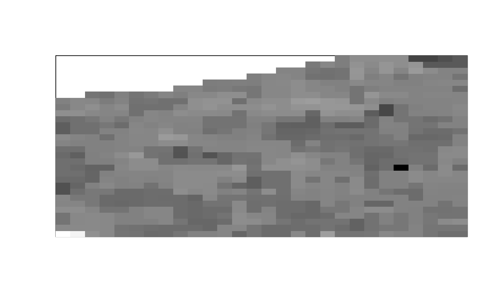

Given a stack of images img, use the first frames_per_set of them to
create one cross-correlated number image, the next frames_per_set of
them to create the next and so on to get a time-series of cross-correlated
number images.
Usage
cc_number_timeseries(
img,
frames_per_set,
overlap = FALSE,
ch1 = 1,
ch2 = 2,
thresh = NULL,
detrend = FALSE,
quick = FALSE,
filt = NULL,
parallel = FALSE
)Arguments
- img
A 4-dimensional array of images indexed by
img[y, x, channel, frame](an object of class ijtiff::ijtiff_img). The image to perform the calculation on. To perform this on a file that has not yet been read in, set this argument to the path to that file (a string).- frames_per_set
The number of frames with which to calculate the successive cross-correlated numbers.
This may discard some images, for example if 175 frames are in the input and
frames_per_set = 50, then the last 25 are discarded. If bleaching or/and thresholding are selected, they are performed on the whole image stack before the sectioning is done for calculation of cross-correlated numbers.- overlap
A boolean. If
TRUE, the windows used to calculate brightness are overlapped, ifFALSE, they are not. For example, for a 20-frame image series with 5 frames per set, if the windows are not overlapped, then the frame sets used are 1-5, 6-10, 11-15 and 16-20; whereas if they are overlapped, the frame sets are 1-5, 2-6, 3-7, 4-8 and so on up to 16-20.- ch1
A natural number. The index of the first channel to use.
- ch2
A natural number. The index of the second channel to use.
- thresh
Do you want to apply an intensity threshold prior to calculating cross-correlated number (via
autothresholdr::mean_stack_thresh())? If so, set your thresholding method here. If this is a single value, that same threshold will be applied to both channels. If this is a length-2 vector or list, then these two thresholds will be applied to channels 1 and 2 respectively. A value ofNAfor either channel gives no thresholding for that channel.- detrend
Detrend your data with
detrendr::img_detrend_rh(). This is the best known detrending method for brightness analysis. For more fine-grained control over your detrending, use thedetrendrpackage. To detrend one channel and not the other, specify this as a length 2 vector.- quick
FALSErepeats the detrending procedure (which has some inherent randomness) a few times to hone in on the best detrend.TRUEis quicker, performing the routine only once.FALSEis better.- filt
Do you want to smooth (
filt = 'smooth') or median (filt = 'median') filter the cross-correlated number image usingsmooth_filter()ormedian_filter()respectively? If selected, these are invoked here with a filter radius of 1 and with the optionna_count = TRUE. A value ofNAfor either channel gives no thresholding for that channel. If you want to smooth/median filter the cross-correlated number image in a different way, first calculate the cross-correlated numbers without filtering (filt = NULL) using this function and then perform your desired filtering routine on the result.- parallel
Would you like to use multiple cores to speed up this function? If so, set the number of cores here, or to use all available cores, use
parallel = TRUE.
Examples
# \donttest{
img <- ijtiff::read_tif(system.file("extdata", "two_ch.tif",
package = "nandb"
))
#> Reading two_ch.tif: an 8-bit, 30x28 pixel image of unsigned
#> integer type. Reading 2 channels and 100 frames . . .
#> Done.
cc_nts <- cc_number_timeseries(img, 10,
thresh = "Huang",
filt = "median", parallel = 2
)
ijtiff::display(cc_nts[, , 1, 1])
#> Using basic display functionality.
#> * For better display functionality, install the EBImage package.
#> * To install `EBImage`:
#> - Install `BiocManager` with `install.packages("BiocManager")`.
#> - Then run `BiocManager::install("EBImage")`.

# }